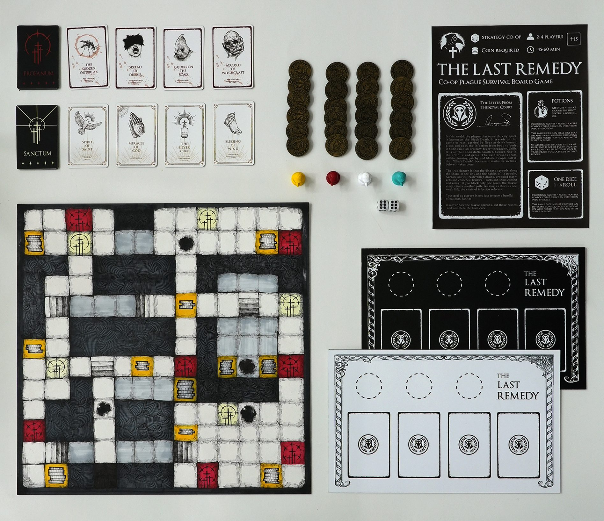
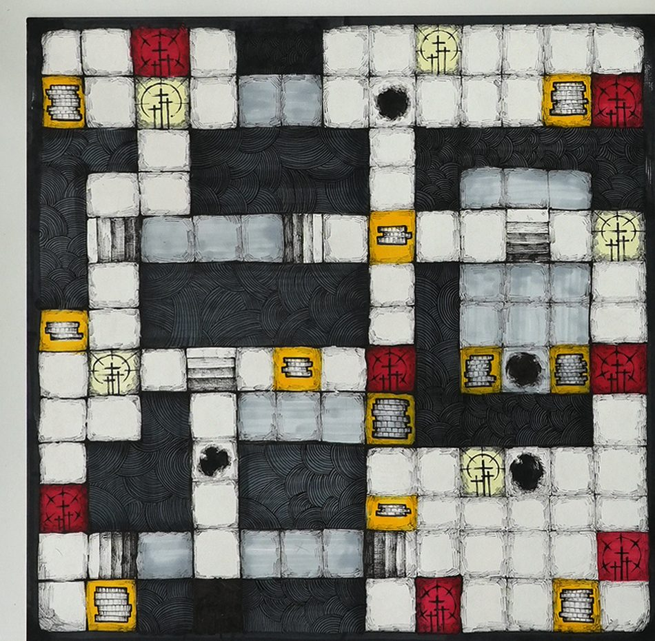
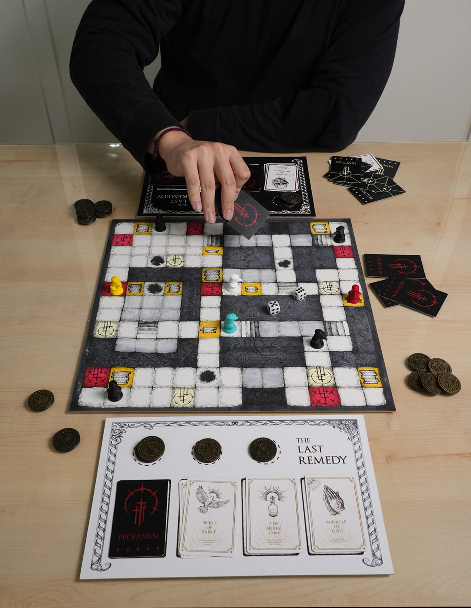
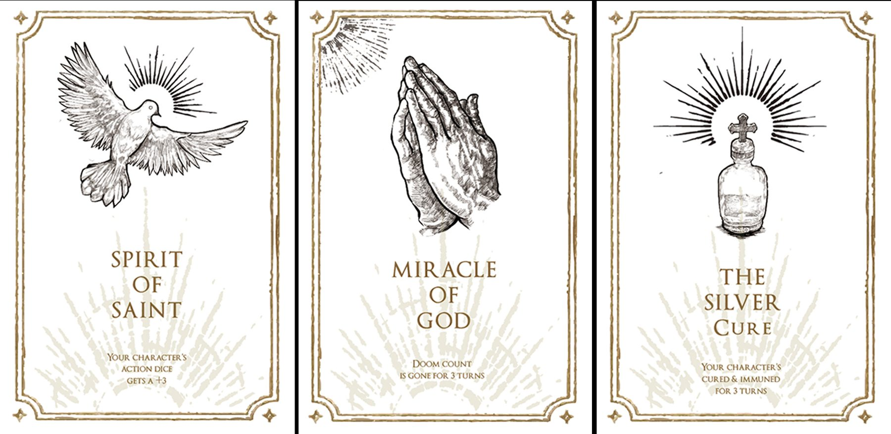
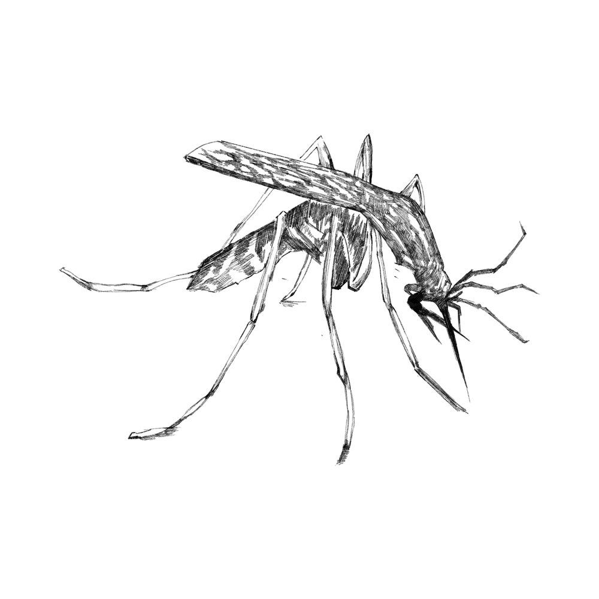
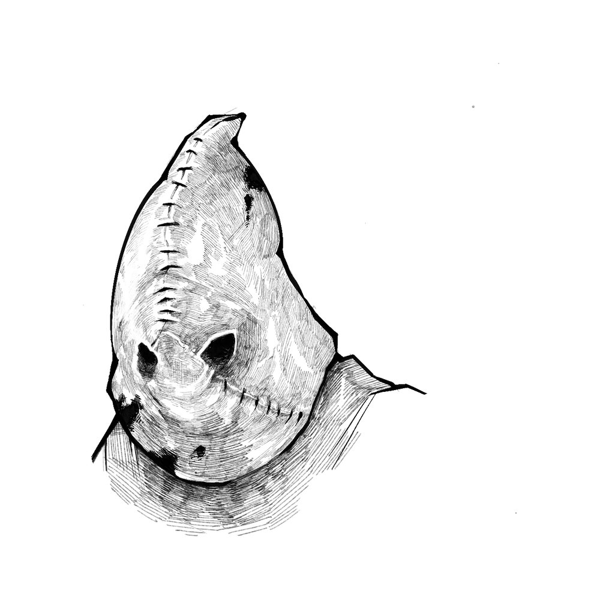
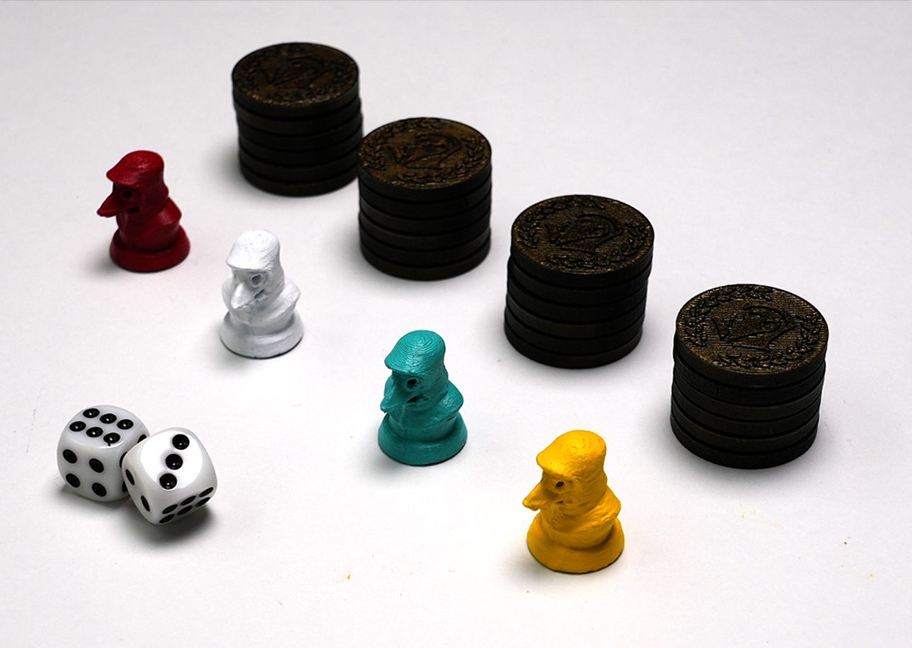

Personal project
The Last Remedy
A co-op plague survival board game, shaped by what it felt like to live through COVID restrictions.

Overview
Navigating uncertainty and restriction during the COVID era shaped this cooperative board game. Limited movement and shared decision-making are built into how it plays.
Players are not trying to save a handful of patients. Their goal is to “discover how the plague spreads, cut those routes, and complete the final cure.” Block one place and the plague simply finds another path.
I designed the game system and the full visual identity: the board, cards, tokens and 3D-printed pieces.
The game
-


The board
The board is the city the plague moves through. Movement is limited, so players have to plan their routes together.
-

Two decks
Profanum cards bring trouble: The Sudden Outbreak, Spread of Disease, Raiders on the Road, Accused of Witchcraft. Sanctum cards bring help: Spirit of Saint, Miracle of God, The Silver Cure, Blessing of Wind.
-


Card art
The illustrations began as line drawings, like this mosquito and stitched hood.
-

Pieces
Four plague-doctor pawns, 3D-printed, one for each player, with coin tokens and dice.